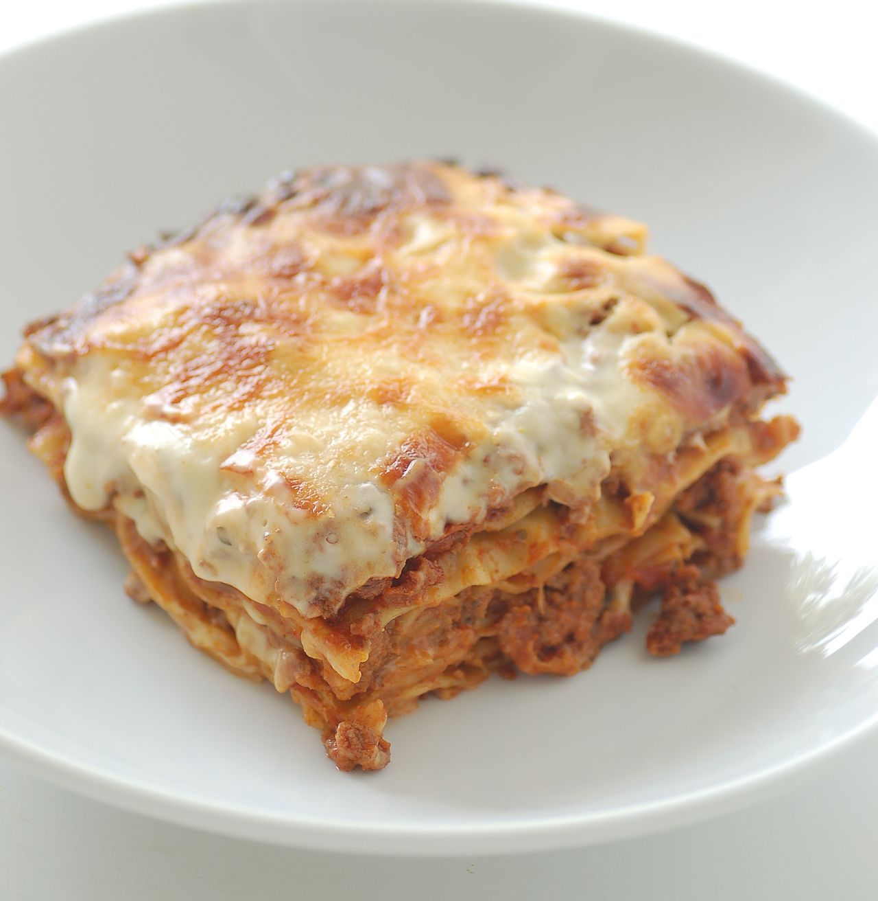

Lasagna with Meat Sauce

Description
This lasagna recipe uses a bechemel sauce along with ragu to create a creamy, rich lasagna.
It is great for a weeknight dinner due to its simple preparation.
Ingredients
- 1 Box of Lasagna Pasta Sheets
- 1 Pound of Ground Beef
- 1 Medium Onion
- 1 Jar of Tomato Sauce
- 2 Cups of Milk
- 1 Tablespoon of Butter
- 1 Tablespoon of Flour
- 3 Tablespoons of Olive Oil
- 1 Cup Parmesean Cheese
- 1 Cup Mozzarella Cheese
Steps
- Prepare the pasta sheets according to directions on box
- Chop the onion. Saute the chopped onion in a large pot with the olive oil
- After the onion has browned, about 10 minutes, add ground beef to the pot
- Once the beef is fully cooked, add the tomato sauce and bring to a simmer
- Meanwhile, start the bechemel sauce by adding the butter to a small pan
- Once the butter is melted, stir in the flour. Cook until the flour is no longer raw, about 3 minutes
- Whisk in the milk into the flour mixture until smooth and bring to a simmer. Season with salt and remove from heat.
- Layer the pasta sheets, meat sauce, bechemel sauce, and cheese in a baking pan. Repeat for 2 or 3 more layers.
- Bake the lasagna at 350 degrees Fahrenheit for 1 hour. Let rest for 10 minutes before serving.